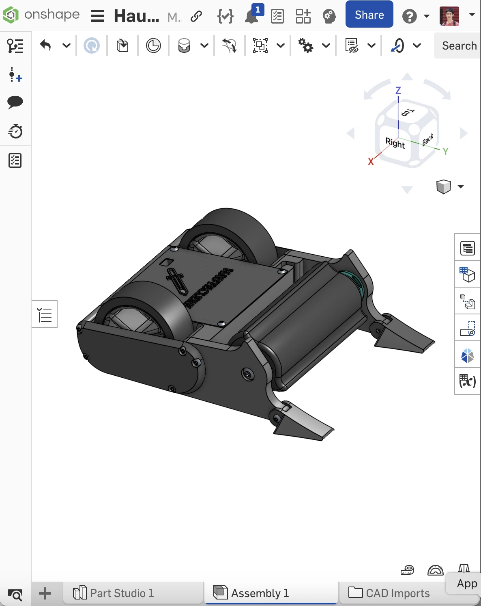

2025 | 1lb Plastic Antweight
Inspired by the likes of Battlebots & NHRL, Hauteclere is my first introduction in the world of combat robots. Sporting a drum and dual wheel drive, the goal of Hauteclere was to be a simple and straightforward design in order to solidify the fundamentals and basics of combat robot electronics.
RECORD
0 - 0
TOOLS



Onshape CAD
Project Overview
The plastic antweight division in combat robotics is a 1 lb weight class where all structural and weapon components must be fully 3D-printed. Hauteclere is fully PLA printed and designed with repairability, durability, and offense in mind.
V1 Prototype
The primary goal of the first iteration was an electronics system check. V1 featured a long drum connected to a dual wheel drivetrain. With generous packaging space allocation, this served as the predecessor for a most optimized version of the robot.
After the first competition, the underlying flaws of V1 Hauteclere could not be more clear. Its large wheels were heavy, the heat set inserts weren't tight, the weapon alignment was off-axis, and there were too many points of failure due the amount of parts needed.
Weapon Specs:
Motor Speed: 2300 KV
Tip Speed: 214.9 ft/sec
Electronics
Hauteclere runs a 3S Lipo, using a dual ESC for the drive motors and a weapon ESC for the weapon motor. The reciever operates on FS2A, using standard COTS parts from Repeat Robotics.
V2 Redesign
Using the lessons from the first prototype, the second iteration addressed these with a pulley powered 4 wheel design, using aluminum axles for the weapon and drivebase, fewer parts that were more streamlined, and eliminate heat set inserts on critical components.
Weapon Specs:
Motor Speed: 2300 KV
Tip Speed: 349.1 ft/sec
Rotational Tip Speed: 28980 RPM
Results
Super excited to compete with Hauteclere at local competitions! More updates to come.